Screen time,
kept small.Ekran süresi,
hafifçe.
Tally counts how long each window has focus and shows it against a daily goal — as a pill on your bar and a card that hangs under it. No daemon, no polling, nothing leaves your machine. Tally her pencerenin odakta kaldığı süreyi sayar ve günlük hedefine göre gösterir — bar'ında bir pill ve altında sarkan bir kart olarak. Arka plan servisi yok, sorgulama yok, hiçbir şey makinenden çıkmaz.
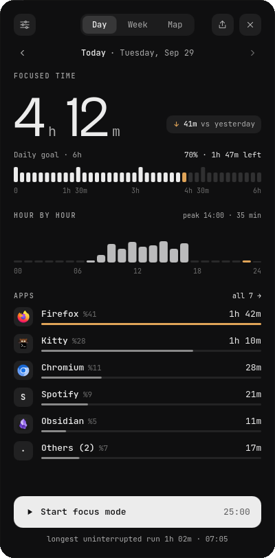
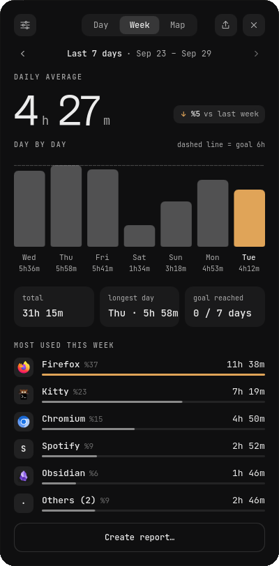
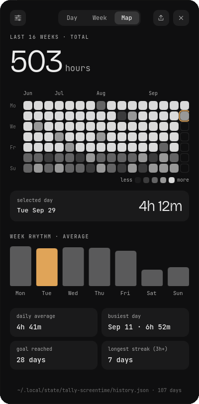
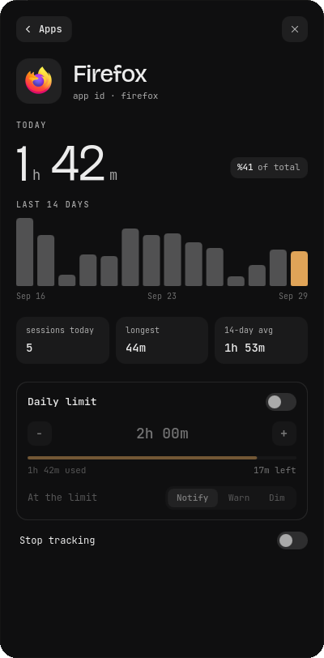
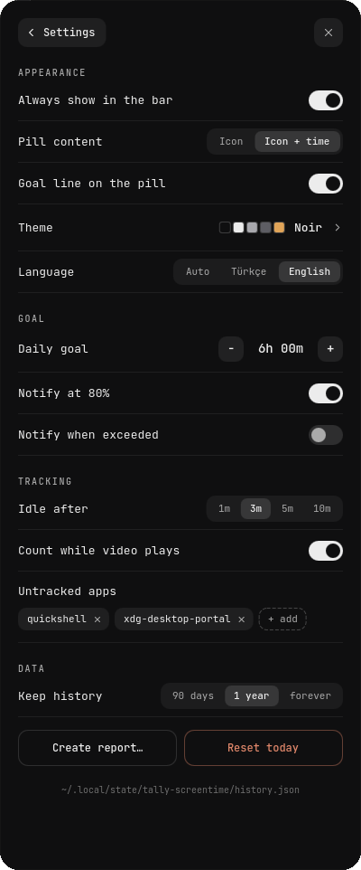
Counts what has focus.
Nothing else.Odaktakini sayar.
Başka bir şey değil.
Your day is measured against a goal drawn as forty tick marks — the last filled tick is the accent.Gün, kırk çentikli bir hedef cetveline göre ölçülür — son dolu çentik vurgu rengindedir.
Idle time is taken backBoşta süre geri alınır
Walk away and the minutes before Tally noticed are subtracted, hour by hour.Kalkıp gidersen, Tally'nin fark etmesinden önceki dakikalar saat saat düşülür.
LimitsSınırlar
A daily limit per app: notify, warn, or dim the screen.Uygulama başına günlük sınır: bildir, uyar ya da ekranı karart.
Focus sessionsOdak oturumları
Twenty-five minutes; the pill becomes a countdown ring.Yirmi beş dakika; pill geri sayım halkasına dönüşür.
Sixteen themesOn altı tema
A launcher-style picker with a live preview. A theme is three colours.Canlı önizlemeli seçici. Bir tema üç renktir.
Turkish & EnglishTürkçe ve İngilizce
Follows your locale or your choice, with a short first-run tour you can skip.Yerel ayarını ya da seçimini izler; atlanabilir kısa bir ilk açılış turu vardır.
Your data stays yoursVerin senin
Two JSON files in ~/.local/state. Reports never call out.~/.local/state altında iki JSON dosyası. Raporlar dışarıya bağlanmaz.
Share what you see.Gördüğünü paylaş.
Export a day, the last week or everything as a PNG, a one-page PDF, an interactive HTML page or raw JSON — in your theme, or on light paper for printing. Every number comes from the same function, and a test re-derives them from your history.Bir günü, son haftayı ya da tümünü PNG, tek sayfalık PDF, etkileşimli HTML veya ham JSON olarak dışa aktar — temanla ya da yazdırmak için açık kâğıda. Tüm sayılar aynı fonksiyondan gelir; bir test bunları geçmişinden yeniden hesaplar.
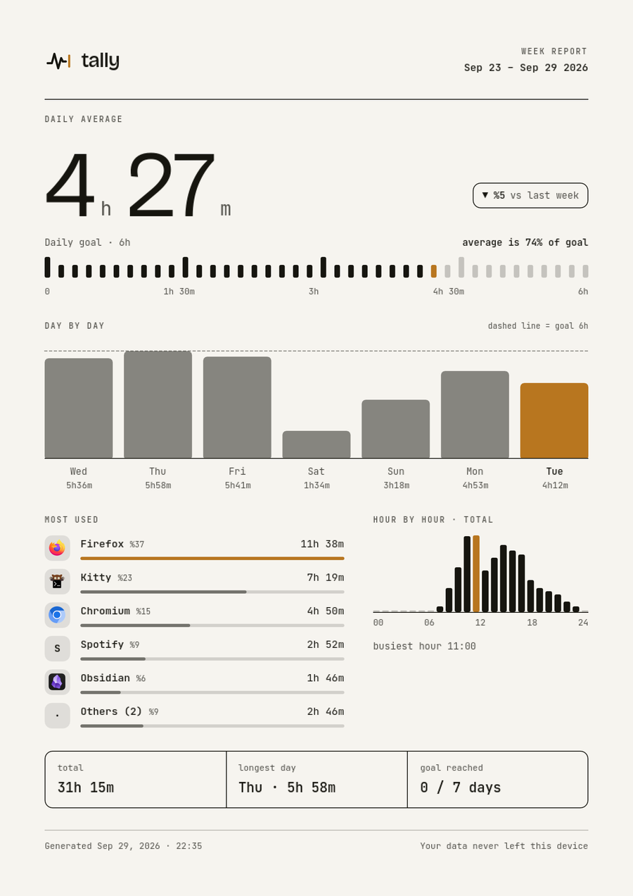
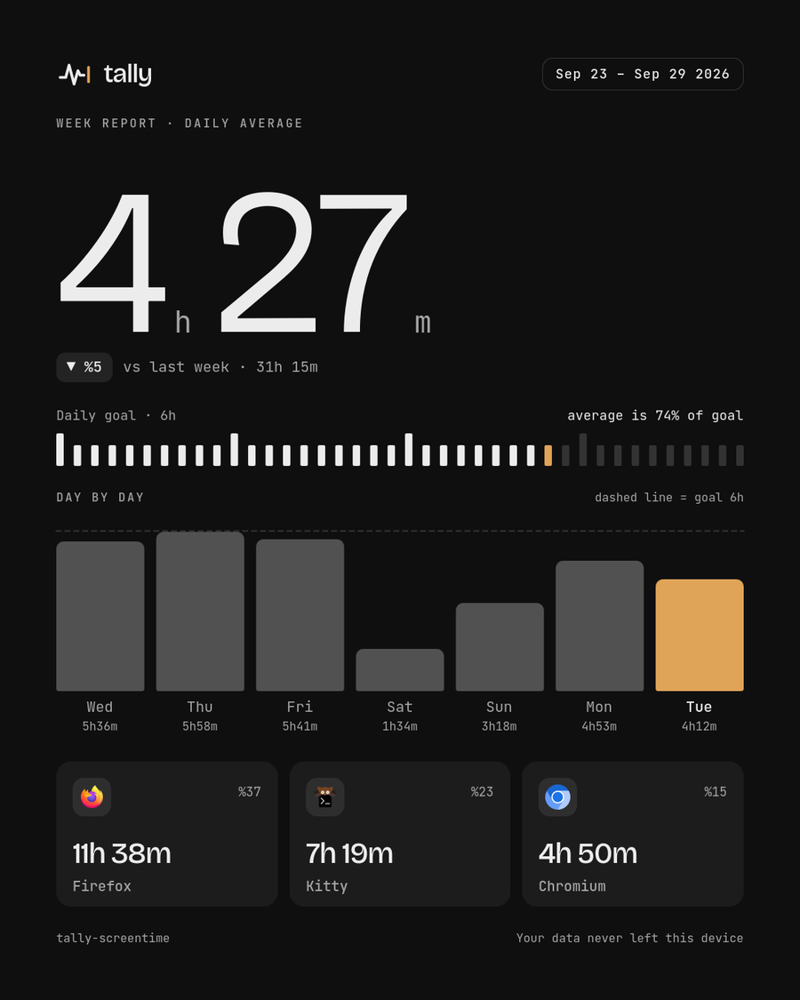
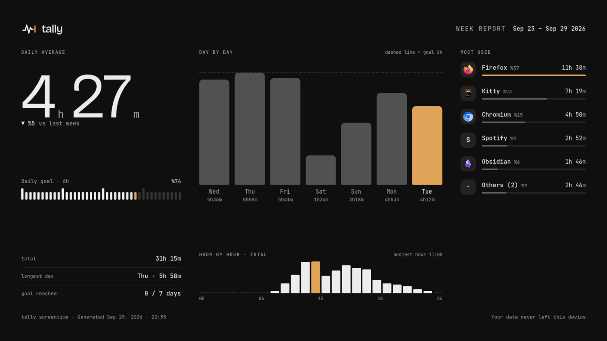
Yours to colour.Rengi senin.
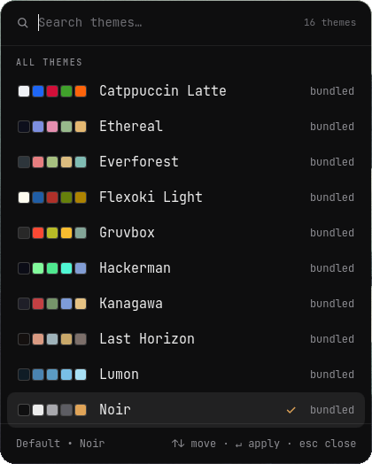
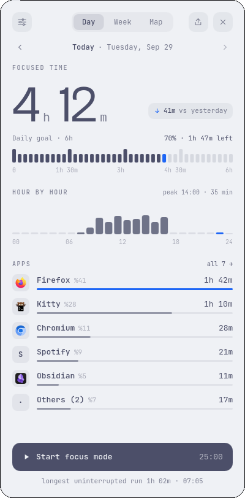
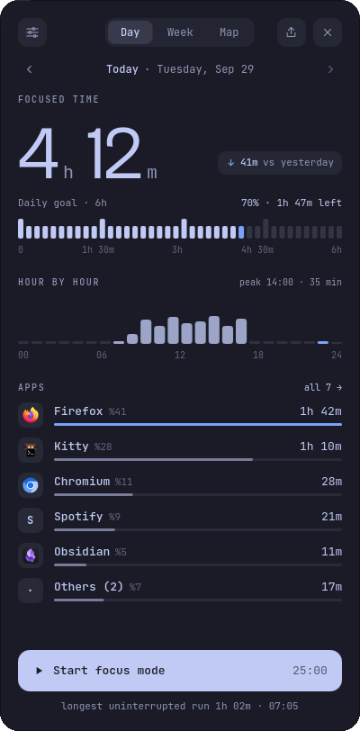
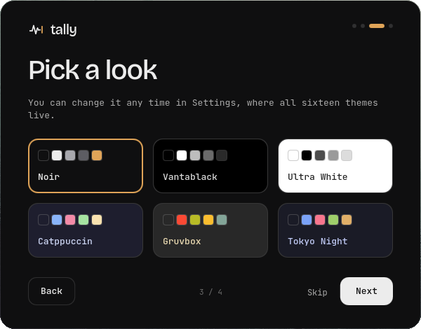
Small on purpose.Bilerek küçük.
daemons — it lives in your Quickshellservis — Quickshell'in içinde yaşar
the only timer, and only while something is being countedtek zamanlayıcı, o da yalnızca bir şey sayılırken
between disk writes, and only when something changeddisk yazımları arası, o da yalnızca bir şey değiştiyse
windows while the card is closedkart kapalıyken pencere
| Measured over 45 s45 sn boyunca ölçüldü | CPU | MemoryBellek | Wakeups / sUyanma / sn |
|---|---|---|---|
| Empty Quickshell, one windowBoş Quickshell, tek pencere | 0.00 % | 163 MB | 0.0 |
| Tally, card closedTally, kart kapalı | 0.09 % | 203 MB | 0.5 |
| Tally, card openTally, kart açık | 0.09 % | 257 MB | 0.8 |
| Card open, focus session runningKart açık, odak oturumu sürüyor | 0.27 % | 214 MB | 22.1 |
to bill 15 s into a year of historybir yıllık geçmişe 15 sn işlemek
to build a week's reportbir haftalık raporu hazırlamak
to build a whole year's reportbir yıllık raporu hazırlamak
extra, briefly, while a board report is drawnbir pano raporu çizilirken, kısa süreliğine
One machine (Intel i5-12500H, Hyprland 0.56, Quickshell 0.3.1, 1080p), one run each, counting on. Memory moves by tens of megabytes between runs; "wakeups" counts everything the process does. The focus session is the costly case — its clock repaints the card every second. Reproduce it with tools/measure.py.Tek makine (Intel i5-12500H, Hyprland 0.56, Quickshell 0.3.1, 1080p), her biri tek çalıştırma, sayım açık. Bellek çalıştırmalar arasında onlarca MB oynar; "uyanma" sürecin yaptığı her şeyi sayar. Pahalı olan odak oturumudur — saati kartı her saniye yeniden çizer. tools/measure.py ile yeniden üretebilirsin.
Two lines.İki satır.
Needs Quickshell 0.3+ on Hyprland. Put the folder in your shell, then:Hyprland'da Quickshell 0.3+ gerekir. Klasörü shell'ine koy, sonra:
Shell.qml
// Shell.qml
import "vendor/tally/ui" as Tally
ShellRoot {
Tally.TallyHost {}
}
In your barBar'ında
Tally.TallyPill {
size: barHeight
barTop: 0
barLeft: 0
screenName: screen.name
}
# bind a key, and try the rest from the terminal bind = $mainMod, P, exec, qs ipc call lunanoir.tally-screentime toggle qs ipc call lunanoir.tally-screentime report week card png theme # or try it on its own quickshell -p /path/to/tally/Main.qml